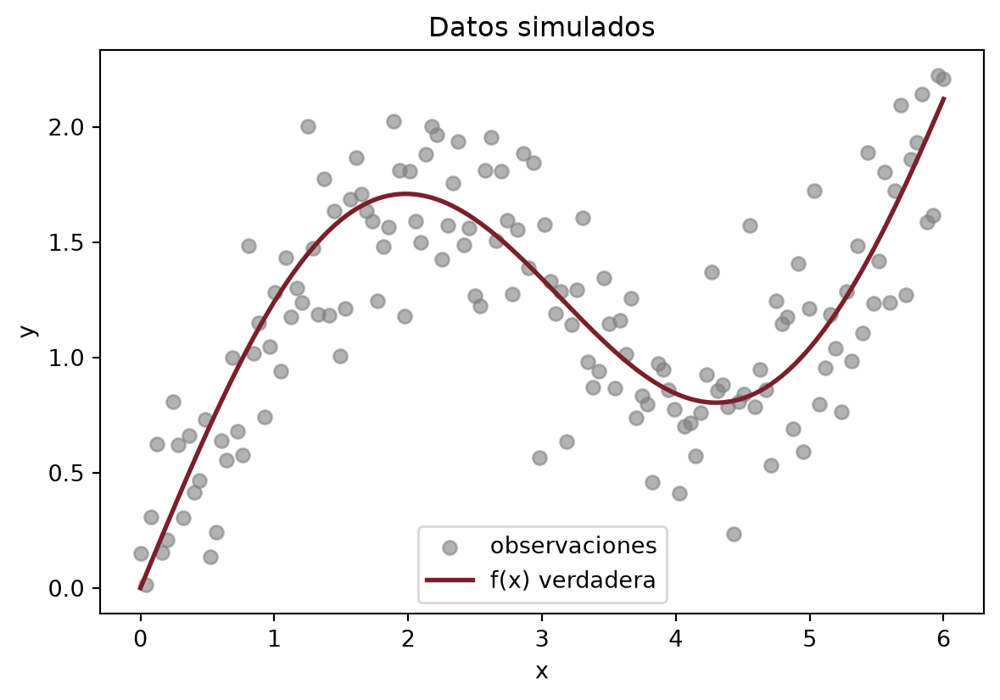
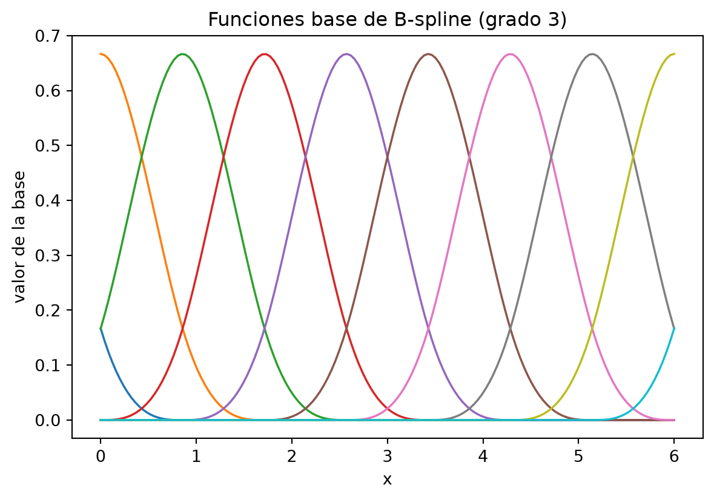
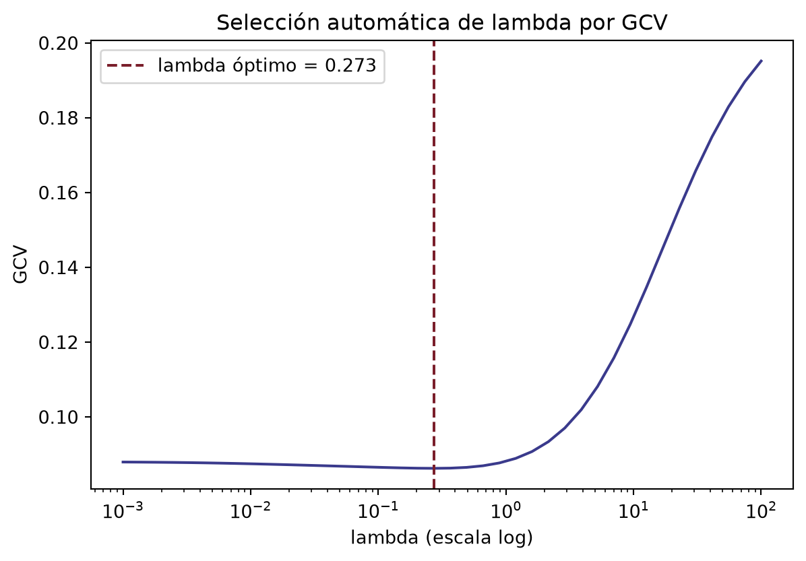
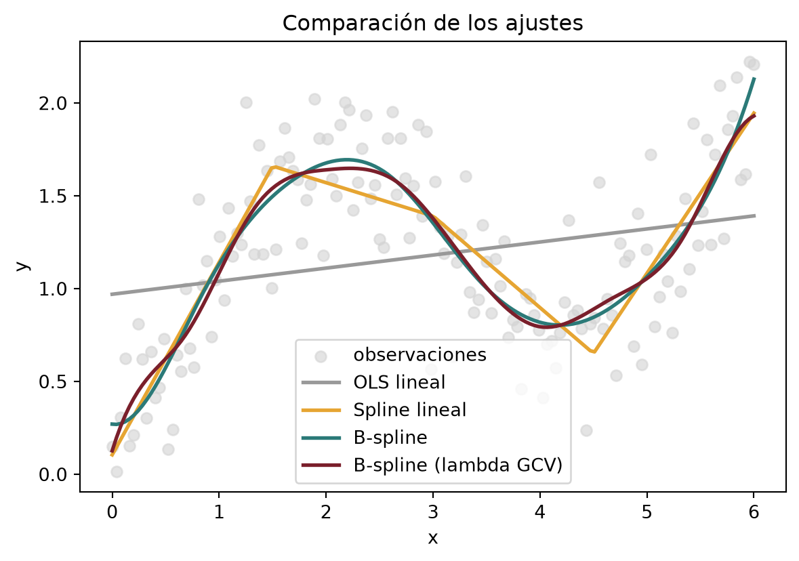

import numpy as np
import pandas as pd
import matplotlib.pyplot as plt
from sklearn.preprocessing import SplineTransformer
# Datos simulados: relación no lineal
np.random.seed(42)
n = 150
x = np.linspace(0, 6, n)
y = np.sin(x) + 0.4 * x + np.random.normal(scale=0.3, size=n)
dat = pd.DataFrame({"x": x, "y": y})Implementación en Python
Notebook de implementación
Código reproducible en Python (NumPy, scikit-learn, matplotlib) para ajustar splines lineales, polinomiales y B-splines. Cada celda muestra el código real, ejecutado, junto con su resultado.
Antes de empezar: ¿qué es lo que realmente estamos preguntando?
Antes de escribir una sola línea de código vale la pena detenerse en la pregunta, porque el código sin la pregunta es solo aritmética. Tenemos datos (xi, yi) que provienen de una relación real pero desconocida yi = f(xi) + εi. No conocemos f; solo tenemos sus huellas, contaminadas por ruido. Todo lo que sigue —mínimos cuadrados clásicos, splines lineales, B-splines, penalización, selección automática de λ— es una misma pregunta hecha de maneras cada vez más flexibles: ¿con qué familia de funciones estoy dispuesto a describir f, y qué le cuesta a mis datos que yo elija una familia u otra?
Este notebook no busca “mejorar” mínimos cuadrados —ya vimos en el documento principal que mínimos cuadrados es perfectamente capaz de ajustar relaciones no lineales, siempre que la no linealidad esté en las columnas de la matriz de diseño y no en los parámetros—. Lo que exploramos aquí es qué pasa cuando dejamos de fijar de antemano la forma global de esas columnas y las construimos, en cambio, a partir de piezas locales. La aritmética de fondo, CtC ĉ = Ctp, no cambia en ningún momento; lo que cambia es quién genera las columnas de C.
Cómo leer este notebook. Cada sección sigue el mismo patrón: primero miramos los datos y nos preguntamos qué forma tiene el problema, después escribimos el código que resuelve exactamente esa pregunta, y al final leemos el resultado con calma antes de pasar a la siguiente idea. No hay prisa; el objetivo no es que el código corra, sino que cada línea tenga una razón de ser antes de escribirse.
Todo el notebook usa solo numpy, pandas, matplotlib y scikit-learn — sin dependencias exóticas— y resuelve las ecuaciones normales explícitamente con numpy.linalg.solve, tal como se hace en el documento principal.
1. Los datos: una señal curva escondida en ruido
Para poder comparar honestamente varios métodos necesitamos una verdad de referencia. Simulamos entonces una señal f(x) = sin (x) + 0.4x —una curva suave, con una oscilación y una tendencia lineal superpuesta— y le añadimos ruido gaussiano. La ventaja de simular es que después, cuando midamos el error de cada ajuste, sabremos si estamos midiendo el desempeño del método o simplemente la mala suerte del ruido.
fig, ax = plt.subplots(figsize=(7, 4.5))
ax.scatter(x, y, color="grey", alpha=0.6, label="observaciones")
ax.plot(x, np.sin(x) + 0.4 * x, color="#7a1f2b", linewidth=2, label="f(x) verdadera")
ax.set_xlabel("x")
ax.set_ylabel("y")
ax.set_title("Datos simulados")
ax.legend()
plt.show()
Con n = 150 observaciones ya podemos ver a simple vista la trampa que le tendemos a un modelo lineal: hay una curvatura genuina, no solo ruido alrededor de una recta.
2. El punto de partida: mínimos cuadrados con la matriz de diseño más simple
Empezamos por el modelo más honesto y más simple: una recta. La razón para empezar aquí no es que esperemos que funcione bien, sino que la recta es el caso particular que nos deja ver la maquinaria completa —la matriz de diseño X, las ecuaciones normales, el estimador β̂— sin que nada más distraiga.
# Construcción manual de la matriz de diseño
X = np.column_stack([np.ones(n), x]) # X = [1 | x]
beta = np.linalg.solve(X.T @ X, X.T @ y) # ecuaciones normales
y_ols = X @ beta
mse_ols = np.mean((y - y_ols) ** 2)
print(f"EMC OLS: {mse_ols:.4f}")EMC OLS: 0.2354Fíjense en que no llamamos a ningún LinearRegression() de una librería: escribimos la solución de las ecuaciones normales XtXβ̂ = Xty a mano, exactamente como en el documento principal. Esto es deliberado —quiero que la línea np.linalg.solve(X.T @ X, X.T @ y) quede grabada como la operación que subyace a todo lo que sigue en este notebook, aunque las columnas de X se vuelvan mucho más interesantes más adelante.
El error de la recta no es un número que debamos temer: es la medida honesta de cuánto le cuesta a una recta describir una curva. Ese costo es justamente lo que motiva el resto del notebook.
3. Una primera generalización: funciones “rampa” con nodos
El modelo lineal falla no porque mínimos cuadrados sea limitado, sino porque le dimos solo dos columnas —una constante y una recta— para describir una curva que necesita más. La idea más simple para darle más flexibilidad sin perder la estructura de mínimos cuadrados es añadir columnas que se “activen” solo a partir de cierto punto: funciones rampa (x − ξ)+ = max (x − ξ, 0).
# Función base: (x - knot)+
def ramp(x, xi):
return np.maximum(x - xi, 0)
# Nodos en cuartiles del rango
knots = np.quantile(x, [0.25, 0.5, 0.75])
# Matriz de diseño: [1 | x | (x-k1)+ | (x-k2)+ | (x-k3)+]
X_sp = np.column_stack([np.ones(n), x] + [ramp(x, k) for k in knots])
beta_sp = np.linalg.solve(X_sp.T @ X_sp, X_sp.T @ y)
y_sp = X_sp @ beta_sp
mse_sp = np.mean((y - y_sp) ** 2)
print(f"EMC Spline lineal: {mse_sp:.4f}")EMC Spline lineal: 0.0855Miren con cuidado qué acabamos de hacer: seguimos resolviendo exactamente las mismas ecuaciones normales que en la sección anterior. Lo único que cambió es que X ahora tiene columnas construidas por tramos en lugar de una sola recta global. Esta es la primera vez que vemos, en código y no solo en teoría, que el teorema de invariancia no es un adorno: es literalmente la razón por la que este bloque de código se parece tanto al anterior.
La mejora frente a la recta viene enteramente de darle a la curva permiso para cambiar de pendiente en cada nodo, sin tener que decidir de antemano una fórmula global que la describa.
4. De rampas a B-splines: la misma idea, mejor comportada
Las funciones rampa resuelven el problema pero tienen una molestia técnica: no son suaves (tienen un quiebre anguloso en cada nodo) y, sobre todo, las columnas que generan tienden a estar muy correlacionadas entre sí, lo cual hace que XtX esté mal condicionada cuando usamos muchos nodos. Los B-splines resuelven ambos problemas a la vez: se construyen con la recursión de Cox-de Boor para que sean suaves hasta cierto orden, y tienen soporte compacto —cada función base vive solo en una vecindad de nodos—, lo cual se traduce en que XtX es una matriz banda, casi diagonal, en vez de una matriz densa.
En Python usamos SplineTransformer de scikit-learn, que construye la misma base B-spline que la función bs() de R, a partir de un grado y de un número de nodos interiores colocados en cuantiles de x.
# SplineTransformer construye automáticamente la base de B-splines
degree = 3
df = 10 # grados de libertad de la base
n_knots = df - degree + 1 # nodos interiores + 2 de frontera
spl = SplineTransformer(degree=degree, n_knots=n_knots,
knots="quantile", include_bias=True)
X_bs_raw = spl.fit_transform(x.reshape(-1, 1))
# Ajuste por OLS estándar (misma solución de ecuaciones normales)
X_bs = np.column_stack([np.ones(n), X_bs_raw])
beta_bs = np.linalg.solve(X_bs.T @ X_bs, X_bs.T @ y)
y_bs = X_bs @ beta_bs
mse_bs = np.mean((y - y_bs) ** 2)
print(f"EMC B-spline: {mse_bs:.4f}")EMC B-spline: 0.0754fig, ax = plt.subplots(figsize=(7, 4.5))
for j in range(X_bs_raw.shape[1]):
ax.plot(x, X_bs_raw[:, j], linewidth=1.3)
ax.set_xlabel("x")
ax.set_ylabel("valor de la base")
ax.set_title("Funciones base de B-spline (grado 3)")
plt.show()
La figura anterior es, quizás, la más importante de todo el notebook: ninguna de esas curvas vive en todo el dominio. Eso es exactamente lo que en el documento principal llamamos soporte compacto, y es la propiedad algebraica —no solo geométrica— que hace que XtX sea banda: si dos funciones base no se superponen, la entrada correspondiente de XtX es cero.
De nuevo seguimos ajustando por mínimos cuadrados ordinarios, resolviendo las mismas ecuaciones normales de la sección 2. El error baja respecto al spline lineal, y la curva resultante es visiblemente más suave, sin quiebres angulosos.
5. Cuando la flexibilidad es demasiada: penalización
Con df = 12 le damos a la base bastante libertad —tal vez más de la que los datos pueden justificar—. Una manera de controlar ese exceso sin volver a un modelo rígido es penalizar el tamaño de los coeficientes que multiplican a las funciones base más flexibles, dejando intactos el intercepto y el primer coeficiente de la base.
# beta_hat = (X'X + lambda*D)^-1 X'y
# D penaliza solo los coeficientes de la base, no el intercepto
lam = 0.5
df2 = 12
n_knots2 = df2 - degree + 1
spl2 = SplineTransformer(degree=degree, n_knots=n_knots2,
knots="quantile", include_bias=True)
X_pen_raw = spl2.fit_transform(x.reshape(-1, 1))
X_pen = np.column_stack([np.ones(n), X_pen_raw])
p = X_pen.shape[1]
D = np.diag([0, 0] + [1] * (p - 2))
beta_pen = np.linalg.solve(X_pen.T @ X_pen + lam * D, X_pen.T @ y)
y_pen = X_pen @ beta_pen
mse_pen = np.mean((y - y_pen) ** 2)
print(f"EMC B-spline penalizado (lambda = {lam}): {mse_pen:.4f}")EMC B-spline penalizado (lambda = 0.5): 0.0760Vale la pena mirar esta línea con la misma atención que la primera del notebook: np.linalg.solve(X_pen.T @ X_pen + lam * D, X_pen.T @ y) es, otra vez, la solución de unas ecuaciones normales —solo que ligeramente perturbadas por λD. No es una técnica nueva; es la misma álgebra con un término de regularización que castiga la rugosidad excesiva.
6. Dejando que los datos elijan λ: búsqueda por GCV
Elegir λ = 0.5 a mano funciona para un ejemplo, pero no es una estrategia seria en general. Lo que hace mgcv en R —y lo que replicamos aquí con un pequeño barrido manual— es elegir λ minimizando la validación cruzada generalizada (GCV):
$$ \mathrm{GCV}(\lambda) = \frac{n \cdot \mathrm{RSS}(\lambda)}{\left(n - \operatorname{tr} H_\lambda\right)^2}, \qquad H_\lambda = X_{\text{pen}}\left(X_{\text{pen}}^tX_{\text{pen}} + \lambda D\right)^{-1}X_{\text{pen}}^t $$
donde Hλ es la matriz “sombrero” que manda y a ŷ, y su traza tr Hλ hace las veces de “grados de libertad efectivos” del ajuste —exactamente el número edf que reporta mgcv.
lambdas = np.logspace(-3, 2, 40)
gcv_scores = []
for lam_i in lambdas:
A = X_pen.T @ X_pen + lam_i * D
H = X_pen @ np.linalg.inv(A) @ X_pen.T
y_hat = H @ y
rss = np.sum((y - y_hat) ** 2)
tr_H = np.trace(H)
gcv_scores.append((n * rss) / (n - tr_H) ** 2)
gcv_scores = np.array(gcv_scores)
lambda_opt = lambdas[np.argmin(gcv_scores)]
A_opt = X_pen.T @ X_pen + lambda_opt * D
H_opt = X_pen @ np.linalg.inv(A_opt) @ X_pen.T
beta_gam = np.linalg.solve(A_opt, X_pen.T @ y)
y_gam = X_pen @ beta_gam
mse_gam = np.mean((y - y_gam) ** 2)
edf = np.trace(H_opt)
print(f"lambda optimo (GCV): {lambda_opt:.4f}")
print(f"EMC con lambda GCV: {mse_gam:.4f}")
print(f"grados de libertad efectivos (edf): {edf:.2f}")lambda optimo (GCV): 0.2728
EMC con lambda GCV: 0.0751
grados de libertad efectivos (edf): 10.01fig, ax = plt.subplots(figsize=(7, 4.5))
ax.plot(lambdas, gcv_scores, color="#3a3a8c")
ax.axvline(lambda_opt, color="#7a1f2b", linestyle="--",
label=f"lambda óptimo = {lambda_opt:.3f}")
ax.set_xscale("log")
ax.set_xlabel("lambda (escala log)")
ax.set_ylabel("GCV")
ax.set_title("Selección automática de lambda por GCV")
ax.legend()
plt.show()
El número de grados de libertad efectivos (edf) es, en sí mismo, una respuesta a la pregunta con la que abrimos el notebook: la validación cruzada generalizada está diciendo, en el lenguaje de los datos, cuánta flexibilidad necesitó usar el ajuste —ni la máxima que le dimos con df = 12, ni la mínima de una recta.
7. Mirando las cuatro curvas juntas
Antes de cerrar, vale la pena ver los ajustes superpuestos sobre los mismos datos. La comparación visual dice, de un vistazo, lo que las tablas de error dijeron por separado.
fig, ax = plt.subplots(figsize=(7, 4.5))
ax.scatter(x, y, color="lightgrey", alpha=0.6, label="observaciones")
ax.plot(x, y_ols, color="#999999", linewidth=2, label="OLS lineal")
ax.plot(x, y_sp, color="#e6a532", linewidth=2, label="Spline lineal")
ax.plot(x, y_bs, color="#2b7a78", linewidth=2, label="B-spline")
ax.plot(x, y_gam, color="#7a1f2b", linewidth=2, label="B-spline (lambda GCV)")
ax.set_xlabel("x")
ax.set_ylabel("y")
ax.set_title("Comparación de los ajustes")
ax.legend()
plt.show()
8. Cierre: una tabla, y la misma pregunta de siempre
| Modelo | Columnas de la matriz de diseño | EMC | |
|---|---|---|---|
| 0 | OLS lineal | Global: 1, x | 0.2354 |
| 1 | Spline lineal (rampas) | Local, por tramos: (x-nodo)+ | 0.0855 |
| 2 | B-spline cúbico | Local, soporte compacto (Cox-de Boor) | 0.0754 |
| 3 | B-spline penalizado (lambda=0.5) | Igual, con penalización fija | 0.0760 |
| 4 | B-spline (lambda por GCV) | Igual, con penalización elegida por GCV | 0.0751 |
Cada fila de esta tabla resuelve el mismo tipo de ecuación normal. Lo que cambia de una fila a otra no es el método de estimación —siempre es mínimos cuadrados, penalizado o no— sino quién genera las columnas de la matriz de diseño: una recta global, funciones rampa locales, o B-splines con soporte compacto. Ese es, en una tabla, el argumento completo del documento principal: la potencia de los B-splines no está en superar una limitación de mínimos cuadrados, sino en dar flexibilidad local sin tener que fijar de antemano una forma funcional global.
Si compilaste este notebook y los números de EMC no coinciden dígito a dígito con los de una versión escrita en R, es normal: numpy.random y R usan generadores de números aleatorios distintos, así que la misma semilla (42) produce un ruido ligeramente distinto en cada lenguaje. El orden relativo de los métodos —y el argumento que sostienen— no cambia.
Luismar Carrillo Alvarez · Programa Pares Ordenados 2026 · repositorio en GitHub